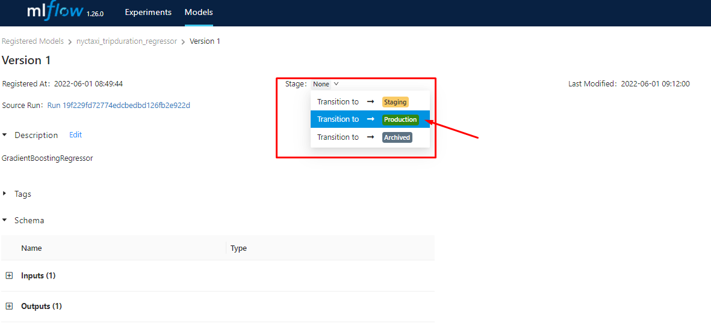

Introduction to MLOps
All the next notes are about MLOps Zoomcamp course.
MLOps is a set of best practices for bringing Machine Learning to production.
Machine Learning projects can be simpplified to just 3 steps:
- Design - is ML the right tool for solving our problem?
- We want to predict the duration of a taxi trip. Do we need to use ML or can we used a simpler rule-based model?
- Train - if we do need ML, then we train and evaluate the best model.
- Operate - model deployment, management and monitoring.
MLOps is helpful in all 3 stages.

VM Instance in AWS
Before to start working with MLOps you should use a VM instance to work with and setup the environment to work.
You can prepare your environment in your local machine, but in our case we are going to set up a VM instance in AWS. You need to have an AWS account(if you want to do the same in GCP go to VM Instance in GCP)
-
Create EC2 instance:
Go to EC2 service and click in launch instance(orange button), now config the VM as:
- Name:
mlops-zoomcamp - Amazon Machine Image:
Ubuntu Server 22.04 LTS (HVM), SSD Volume Type - Architecture:
64-bit (x86) - Instance type:
t2.large - Create and select a key pair:
- Key pair name:
asus-laptop - Key pair type:
RSA - Private key file format:
.pem
- Key pair name:
- Configure Storage:
1x 30 Gib gp2 Root Volume.
- Name:
-
Copy and paste
.pemfile:When you create a key pair a
.pemwill downloaded automatically, you will have to copy and paste this file to your~/.sshdirectory in your local machine. -
Connect to VM Instance:
Go to
~./.sshdirectory and locate theconfigfile type nano~/.ssh/configcopy and paste:Host mlops-zoomcamp HostName EXTERNAL_IP User USER IdentityFile KEY_FILENAME_DIRECTORY LocalForward PORT_1 IP:PORT_1 LocalForward PORT_2 IP:PORT_2 LocalForward PORT_3 IP:PORT_3Example:
Host mlops-zoomcamp HostName 18.117.147.165 User ubuntu IdentityFile C:\Users\ferro\.ssh\asus-laptop.pem LocalForward 8888 localhost:8888 LocalForward 5000 127.0.0.1:5000 LocalForward 4200 0.0.0.0:4200
The EXTERNAL_IP can change every time you power one the VM.
Now you can type ssh mlops-zoomcamp in your console and you'll get connected to the VM.
Note0: In step 4 in config file the last two lines are to forward multiple port through the same host, in this case
LocalForward 8888 localhost:8888 is for jupyter, LocalForward 5000 127.0.0.1:5000 is for MLflow and LocalForward 4200 0.0.0.0:4200 is for Prefect. You can add more LocalForward if you want.
Note1: Don't forget to power off the VM after your work you can use sudo poweroff.
Note2: if you get the next warning:
@@@@@@@@@@@@@@@@@@@@@@@@@@@@@@@@@@@@@@@@@@@@@@@@@@@@@@@@@@@
@ WARNING: REMOTE HOST IDENTIFICATION HAS CHANGED! @
@@@@@@@@@@@@@@@@@@@@@@@@@@@@@@@@@@@@@@@@@@@@@@@@@@@@@@@@@@@
Then copy and paste the EXTERNAL_IP of your VM and type:
ssh-keygen -R EXTERNAL_IP
Example:
ssh-keygen -R "34.125.105.3"
VS Code Setup
If you want to use the VM with a local VS code, follow:
- Install "Remote - SSH" extension in VS Code
- Click on "Open a Remote Window" icon on bottom-left corner
- From dropdown select "Connect to Host" and then select the host name that you put in the
configfile, in this casemlops-zoomcamp. That opens a new VSCode window.
Install Dependencies
Now we need to install the next dependencies(you can update the links for Anaconda and Docker Compose):
- Install Anaconda:
cd ~
wget https://repo.anaconda.com/archive/Anaconda3-2022.05-Linux-x86_64.sh
bash Anaconda3-2022.05-Linux-x86_64.sh
- Install Docker:
sudo apt update
sudo apt install docker.io
- Install Docker Compose
mkdir soft
cd soft/
wget https://github.com/docker/compose/releases/download/v2.5.0/docker-compose-linux-x86_64 -O docker-compose
chmod +x docker-compose
-
Modified PATH Varibles
Type
cdto return to the original directory and typenano .bashrc, copy and paste the next at the end of the.bashrcfile
export PATH="${HOME}/soft:${PATH}"
Type source .bashrc, now everything that is in /soft directory will be in the PATH then you can execute it everywhere.
- Add current user to docker group
sudo usermod -aG docker $USER
logout
Then logback to the VM.
- Verify Installation
which python
# /home/ubuntu/anaconda3/bin/python
which docker
# /usr/bin/docker
which docker-compose
# /home/ubuntu/soft/docker-compose
docker run hello-world
- Run Jupyter Notebook
jupyter notebook
Course Overview
When data scientists experiment with Jupyter Notebooks for creating models, they often don't follow best practices and are often unstructured due to the nature of experimentation: cells are re-run with slightly different values and previous results may be lost, or the cell execution order may be inconsistent, for example.
Module 2 covers experiment tracking: by using tools such as MLflow we will create experiment trackers (such as the history of cells that we've rerun multiple times) and model registries (for storing the models we've created during the experiments), instead of relying on our memory or janky setups such as external spreadsheets or convoluted naming schemes for our files.
Module 3 covers orchestration and ML pipelines: by using tools such as Prefect and Kubeflow we can break down our notebooks into separate identifyable steps and connect them in order to create a ML pipeline which we can parametrize with the data and models we want and easily execute.
Module 4 covers serving the models: we will learn how to deploy models in different ways.
Module 5 covers model monitoring: we will see how to check whether our model is performing fine or not and how to generate alers to warn us of performance drops and failures, and even automate retraining and redeploying models without human input.
Module 6 covers best practices, such as how to properly maintain and package code, how to deploy successfully, etc.
Module 7 covers processes: we will see how to properly communicate between all the stakeholders of a ML project (scientists, engineers, etc) and how to work together.
MLOps Maturity Model
A framework for classifying different levels of MLOps maturity is listed below:
| Lvl | Overview | Use Case | |
|---|---|---|---|
| 0️⃣ | No MLOps |
|
|
| 1️⃣ | DevOps but no MLOps |
|
|
| 2️⃣ | Automated Training |
|
|
| 3️⃣ | Automated Model Deployment |
|
|
| 4️⃣ | Full MLOps Automated Operations |
|
|
Be aware that not every project or even every part of a project needs to have the highest maturity level possible because it could exceed the project's resource budget. Pragmatism is key.
Introduction to Experiment tracking
Important concepts
- ML experiment: the process of building an ML model; The whole process in which a Data Scientist creates and optimizes a model
- Experiment run: each trial in an ML experiment; Each run is within an ML experiment
- Run artifact: any file associated with an ML run: Examples include the model itself, package versions...etc; Each Artifact is tied to an Experiment
- Experiment metadata: metadata tied to each experiment
Experiment tracking
Experiment tracking is the process of keeping track of all the relevant information from an ML experiment(relevant information depends on the experiment), which includes source code, environment, data, model, hyperparameters, metrics, etc.
Experiment tracking helps with:
- Reproducibility
- Organization
- Optimization
Note: Tracking experiments in spreadsheets helps but is not enough because error prone, no standard format, no visibility and collaboration.
MLflow

"An Open source platform for the machine learning lifecycle"
Where ml lifecycle means the whole process of building and maintaining ml models.
MLflow is a python package that contains four main modules:
- Tracking
- Models
- Model registry
- Projects (Out of scope of this notes)
You can check de official MLflow Documentation
Tracking experiments with MLflow:
The MLflow Tracking module allows you to organize your experiments into runs, and to keep track of:
- Parameters: Any parameter that affects the model like hyperparameters, training dataset path, preprocessing, etc.
- Metrics: Metrics for training and test dataset
- Metadata: For example tags
- Artifacts: Any file like visualizations
- Models
Along with this information, MLflow automatically logs extra information about the run:
- Source code
- Version of the code (git commit)
- Start and end time
- Author
Getting Started with MLflow
You can create a conda environment and install MLlow into it, install with:
pip install mlflow=1.27
MLflow has different interfaces, each with their pros and cons. We introduce the core functionalities of MLflow through the UI.
MLflow UI:
To run the MLflow UI locally we use the command:
mlflow ui --backend-store-uri sqlite:///mlflow.db
Note0: If you don't specified a backend store you can't use the Model Registry.
Note1: In the directory you ran the command will be created a mlruns directory and mlflow.db file.
Note2: The backend storage is essential to access the features of MLflow, in this command we use a SQLite backend with the file mlflow.db in the current running repository. This URI is also given later to the MLflow Python API mlflow.set_tracking_uri.
Note3: While the backend store persists MLflow entities (runs, parameters, metrics, tags, notes, metadata, etc), the artifact store persists artifacts (files, models, images, in-memory objects, or model summary, etc).
By accessing the provided local url in the terminal you can access to the UI and you'll see something like this:

In addition to the backend URI, we can also add an artifact root directory where we store the artifacts for runs, this is done by adding a --default-artifact-root paramater:
mlflow ui --backend-store-uri sqlite:///mlflow.db --default-artifact-root ./mlruns
Tracking a Single Experiment run
In order to track experiment runs, we first initialize the mlflow experiment setting the tracking uri and the experiment using the code:
import mlflow
mlflow.set_tracking_uri("sqlite:///mlflow.db")
mlflow.set_experiment(EXPERIMENT_NAME)
Example:
import mlflow
mlflow.set_tracking_uri("sqlite:///mlflow.db")
mlflow.set_experiment("nyc-taxi-experiment")
Where EXPERIMENT_NAME is the name of the experiment you want to use(it will be created if doesn't exist')
We can then track a run, we'll use this simple code snippet as a starting point:
alpha = 0.01
lr = Lasso(alpha)
lr.fit(X_train, y_train)
y_pred = lr.predict(X_val)
mean_squared_error(y_val, y_pred, squared = False)
We initialize the run using with mlflow.start_run(): and wrapping the whole run inside it. We track the relevant information using three mlflow commands:
set_tagfor Metadata tagslog_paramfor logging model parameterslog_metricfor logging model metrics
In the next example we set:
- Metadata tags: the author name
- Log parameters: training and validation data paths and alpha value
- Log metrics: RMSE
Note: The python script or notebooks have to be runned in the same directory as you will run the MLflow UI.
with mlflow.start_run():
mlflow.set_tag("developer", "Chris")
mlflow.log_param("train-data-path", "data/green_tripdata_2021-01.parquet")
mlflow.log_param("val-data-path", "data/green_tripdata_2021-02.parquet")
alpha = 0.01
mlflow.log_param("alpha", alpha)
lr = Lasso(alpha)
lr.fit(X_train, y_train)
y_pred = lr.predict(X_val)
rmse = mean_squared_error(y_val, y_pred, squared = False)
mlflow.log_metric("rmse", rmse)
Now if we run this then in the MLflow UI you'll see a new experiment nyc-taxi-experimentand inside it will be a new run with our logged parameters, tag, and metric.

If you click in the time ago fo the run you'll se all the logs.

Tracking a Multiple Experiment runs(Hyperparameter Optimization)
If you want to track Hyperparameter Optimization you can do a for loop with with mlflow.start_run(): inside and try a different hyperparameters in each iteration, but this is not a efficient way, then we are going to use hyperopt this python library use bayesian methods to find the best hyperparameters in a efficient way. If you want to know more about hyperopt you can chek de Hyperopt Documentation. We import some classes from hyperopt:
fmin: Try to minimize and output(a metric)tpe: Algorithm to control the logic of the optimizationhp: Include different methods to define the search spaceSTATUS_OK: Signal to tell hyperopt the objetive function has run successfullyTrials: Keep track information of each runscope: Define a range of type integer
And now by wrapping the hyperopt Optimization objective inside a with with mlflow.start_run() block, we can track every optimization run that was ran by hyperopt. We then log the parameters passed by hyperopt as well as the metric as follows:
import xgboost as xgb
from hyperopt import fmin, tpe, hp, STATUS_OK, Trials
from hyperopt.pyll import scope
train = xgb.DMatrix(X_train, label=y_train)
valid = xgb.DMatrix(X_val, label=y_val)
def objective(params):
with mlflow.start_run():
mlflow.set_tag("model", "xgboost")
mlflow.log_params(params)
booster = xgb.train(
params=params,
dtrain=train,
num_boost_round=1000,
evals=[(valid, 'validation')],
early_stopping_rounds=50
)
y_pred = booster.predict(valid)
rmse = mean_squared_error(y_val, y_pred, squared=False)
mlflow.log_metric("rmse", rmse)
return {'loss': rmse, 'status': STATUS_OK}
search_space = {
'max_depth': scope.int(hp.quniform('max_depth', 4, 100, 1)),
'learning_rate': hp.loguniform('learning_rate', -3, 0),
'reg_alpha': hp.loguniform('reg_alpha', -5, -1),
'reg_lambda': hp.loguniform('reg_lambda', -6, -1),
'min_child_weight': hp.loguniform('min_child_weight', -1, 3),
'objective': 'reg:linear',
'seed': 42
}
best_result = fmin(
fn=objective,
space=search_space,
algo=tpe.suggest,
max_evals=50,
trials=Trials()
)
In this block, we defined the search space and the objective than ran the optimizer. We wrap the training and validation block inside with mlflow.start_run() and log the used parameters using log_params and validation RMSE using log_metric.
In the UI will be the runs generated by hyperopt, since we use the tag mlflow.set_tag("model", "xgboost") you can filter the runs typingin the search section(in the UI):
tags.model = "xgboost"
In the UI you can compare all this runs following Filter xboost models -> Select all of them -> CLick in Compare and you will can visualize a Parallel Coordinates Plot, Scatter Plot and Contour Plot.

If you want to know how to read this kind of visualizations you can check this video
Selecting the Best Model
When you select the best model is importan to check not just the performance, is important to check:
- Performance
- Training time
- Model Size(Complexity)
Could be that a model has the best performance but the training time and the model size are very bigger than the other model, in that case could be better to choose a model with lower performance but a lower training time and model size.
Onece you have select the best model you have to run again the model with the best parameters, you can use autologging to avoid write the mlflow logs.
Autologging:
Instead of logging the parameters by "Hand" by specifiying the logged parameters and passing them. We may use the Autologging feature in MLflow. There are two ways to use Autologging; First by enabling it globally in the code/Notebook using
mlflow.autolog()
or by enabling the framework-specific autologger, example with XGBoost:
mlflow.xgboost.autolog()
Both must be done before running the experiments like. You can check the frameworks supported by autologger in Automatic Logging
An example of how to use autologging(We don't need with mlflow.start_run():) in MLflow is the next example belong to the best model selected:
best_params = {
"learning_rate": 0.19000742747973715,
"max_depth": 44,
"min_child_weight": 3.852547711639823,
"objective": "reg:linear",
"reg_alpha": 0.006755095335696288,
"reg_lambda": 0.1890415913639682,
"seed": 42,
}
mlflow.xgboost.autolog()
booster = xgb.train(
params=best_params,
dtrain=train,
num_boost_round=1000,
evals=[(valid, 'validation')],
early_stopping_rounds=50
)
The autologger then not only stores the model parameters for ease of use, it also stores other files inside the model (can be specified) folder inside our experiment artifact folder, these files include:
conda.yamlandrequirements.txt: Files which define the current envrionment for use with eithercondaorpiprespectivelyMLmodelan internal MLflow file for organization- Other framework-specific files such as the model itself
Logging Models
Saving Models
After we select the best model we can log whole models for storage (see Model Registry later), to do this we add a line at the end of our with mlflow.start_run() block:
mlflow.<framework>.log_model(model, artifact_path="models_mlflow")
Where we replace the <framework> wih our model's framework (sklearn, xgboost, ... etc.).
The artifact_path defines where in the artifact_uri the model is stored.
We now have our model inside our models_mlflow directory in the experiment folder.
Note: Using Autologging would store more data on parameters as well as the model. i.e: Use log_model is redundant when using the autologger.
Saving Artifacts with the Model
Sometimes we may want to save some artifacts with the model, for example in our case we may want to save the DictVectorizer object with the model for inference (subsequently testing as well). In that case we save the artifact as:
mlflow.log_artifact("vectorizer.pkl", artifact_path = "extra_artifacts")
Where vectorizer.pkl is the vectorizer stored in a Pickle file and extra_artifacts the folder within the artifacts of the model where the file is stored.
An example of saving artifacts with the model:
with mlflow.start_run():
train = xgb.DMatrix(X_train, label=y_train)
valid = xgb.DMatrix(X_val, label=y_val)
best_params = {
"learning_rate": 0.19000742747973715,
"max_depth": 44,
"min_child_weight": 3.852547711639823,
"objective": "reg:linear",
"reg_alpha": 0.006755095335696288,
"reg_lambda": 0.1890415913639682,
"seed": 42,
}
mlflow.log_params(best_params)
booster = xgb.train(
params=best_params,
dtrain=train,
num_boost_round=1000,
evals=[(valid, 'validation')],
early_stopping_rounds=50
)
y_pred = booster.predict(valid)
rmse = mean_squared_error(y_val, y_pred, squared = False)
mlflow.log_metric("rmse", rmse)
with open("vectorizer.pkl", "wb") as f_out:
pickle.dump(dv, f_out)
mlflow.log_artifact("vectorizer.pkl", artifact_path = "extra_artifacts")
mlflow.xgboost.log_model(booster, artifact_path = "models_mlflow")
Loading Models:
We can use the model to make predictions with multiple ways depending on what we need: + We may load the model as a Spark UDF (User Defined Function) for use with Spark Dataframes + We may load the model as a MLflow PyFuncModel structure, to then use to predict data in a Pandas DataFrame, NumPy Array or SciPy Sparse Array. The obtained interface is general for all models from all frameworks + We may load the model as is, i.e: load the XGBoost model as an XGBoost model and treat it as such
The first two methods are explained briefly in the MLflow artifacts page for each run, for the latter we may use (XGBoost example):
logged_model = 'runs:/9245396b47c94513bbf9a119b100aa47/models' # Model UUID from the MLflow Artifact page for the run
xgboost_model = mlflow.xgboost.load_model(logged_model)
The resultant xgboost_model is an XGBoost Booster object which behaves like any XGBoost model. We can predict as normal and even use XGBoost Booster functions such as get_fscore for feature importance.
Model Registry
The Data Scientist decides what models in the tracking server are ready to production and then can register those models into the mlflow registry in that way the Deployment Engineer can take a look in the model registry and see whats models are ready for production. In that way the communication between the person that is in charge of building the model and the person is in charge of deploying the model is improved.

Model Registry only lists models that are production-ready(don't perform the deployment perse) and the stages are just labels assigned to the model. To deploy the model, we will require to implement CI/CD code to communicate with Model Registry.
Note: To use the Model Registry you need to specify a backend store.
Model Registry using UI
Storing Models in the Registry
In order to register models using the UI, we select the run whose model we want to register and then select "Register Model". There we may either create a new model registry or register the model into an existing registry. We can view the registry and the models there in by selecting the "Models" tab in the top and selecting the registry we want.

Promoting and Demoting Models in the registry
Models in the registry are labeled either as Staging, Production or Archive. Promoting and demoting a model can be done by selecting the model in the registry and selecting the stage of the model in the drop down "Stage" Menu at the top.

Model Registry using Tracking Client
Create MLflow Client Instance
In order to automate the process of registering/promoting/demoting models, we use the Tracking Client API initialized as described above:
from mlflow.tracking import MlflowClient
MLFLOW_TRACKING_URI = "sqlite:///mlflow.db"
client = MlflowClient(tracking_uri=MLFLOW_TRACKING_URI)
Get List of Experiments
You can get a list of the experiments with its artifact_location, experiment_id, tags, etc. Typing:
client.list_experiments()
Note: Every time you start using mlflow there will be a default experiment name = Default.
Create and Experimment
client.create_experiment(name = EXPERIMENT_NAME)
Searching Runs
We can search for runs by ascending order of metric score using the API following the next example:
from mlflow.entities import ViewType
runs = client.search_runs(
experiment_ids = '1', # Experiment ID we want
filter_string = "metrics.rmse < 7",
run_view_type = ViewType.ACTIVE_ONLY,
max_results = 5,
order_by = ["metrics.rmse ASC"]
)
search_runsis a simplified version of SQLWHEREclause.- We first need to specify which experiment id that we are referring to (
nyc_taxi_experiment's id is 1). - The
filter_stringallows us to filter the runs you can set empty"". - The
run_view_typevalueViewType.ACTIVE_ONLYshows only the active runs (and not deleted runs) max_resultsshowing only 5 resultsorder_by- ordering the results bymetrics.rmseandASCascending (like SQL)
Now we can then get information about the selected runs from the resulting runs enumerator:
for run in runs:
print(f"run id: {run.info.run_id}, rmse: {run.data.metrics['rmse']:.4f}")
Add a run model to a registry
mlflow.set_tracking_uri(MLFLOW_TRACKING_URI)
run_id = "9245396b47c94513bbf9a119b100aa47"
model_uri = f"runs:/{run_id}/models"
mlflow.register_model(model_uri=model_uri, name="nyc-taxi-regressor")
Get the models in a model registry
model_name = "nyc-taxi-regressor"
latest_versions = client.get_latest_versions(name=model_name)
for version in latest_versions:
print(f"version: {version.version}, stage: {version.current_stage}")
Promote a model to staging
model_version = 4
new_stage = "Staging"
client.transition_model_version_stage(
name=model_name,
version=model_version,
stage=new_stage,
archive_existing_versions=False
)
Update the description of a model
from datetime import datetime
date = datetime.today().date()
client.update_model_version(
name=model_name,
version=model_version,
description=f"The model version {model_version} was transitioned to {new_stage} on {date}"
)
These can then be used to automate the promotion of packages into production or the archival of older models.
Download Artifacts
You can download the artifacts in path belong to the run_id and will be downloaded in dst_path
run_id = "9245396b47c94513bbf9a119b100aa47"
client.download_artifacts(run_id = run_id, path = "extra_artifacts", dst_path = ".")
And now you can load the files that were located in the artifacts:
import pickled
with open("vectorizer.pkl", "rb") as f_in:
dv = pickle.load(f_in)
If you want to know more about MLflow in practice you can check MLflow in practice, if you do that for the scenario 3 you'll need MLflow on AWS notes.
MLflow: Benefits, Limitations and Alternatives
Tracking benefits:
- The tracking server can be easily deployed to the cloud
- Share experiments with other data scientists
- Collaborate with others to build and deploy models
- Give more visibility of the data science efforts
Issues with running a remote (shared) MLflow server
-
Security:
- Restrict access to the server (e.g. access through VPN) to avoid people outside your organization may get acces to the experiments, runs, models, etc.
-
Scalability:
-
Check Deploy MLflow on AWS Fargate scale nicely when the number of users that access(to the mlflow server) increases.
-
Check MLflow at Company Scale by Jean-Denis Lesage to scale mlflow to be able to support thousands of experiments runs and also models.
-
-
Isolation
- Define standard for naming experiments, models and a set of default tags(developer or team name as a tag)
- Restrict access to artifacts (e.g. use s3 buckets living in different AWS accounts)
MLflow limitations (and when not to use it)
- Authentication & Users: The open source version of MLflow doesn’t provide any sort of authentication.
- Data versioning: to ensure full reproducibility we need to version the data used to train the model. MLflow doesn’t provide a built-in solution for that but there are a few ways to deal with this limitation
- Model/Data Monitoring & Alerting: this is outside of the scope of MLflow and currently there are more suitable tools for doing this
MLflow alternatives
There are some paid alternatives to MLflow:
- Neptune
- Comet
- Weights & Biases
- You can go to many more to see a detailed comparation
VM Instance in GCP
Before to create an instance in GCP we need to generate a SSH key(if you want to know what SSH is you can check this video). In your local console(in my case in Git Bash in windows) follow:
You can watch this video or follow the next instructions.
-
Create SSH keys:
Create(if you don't have) and go to
~/.sshdirectory and type:
ssh-keygen -t rsa -f KEY_FILENAME -C USER -b 2048
Example:
ssh-keygen -t rsa -f gcp_ssh -C w10 -b 2048
-
Put this SSH key in GCP:
-
Copy public key:
cat KEY_FILENAME.pubExample:
cat gcp_ssh.pub -
In Cloud console go to Metadata -> EDIT -> SSH keys -> Add item -> Paste public key -> Save
-
-
Create VM Instance:
In Cloud console go to Compute Engine -> VM Instances -> Create Instance config the VM as:
- name:
mlops-zoomcamp-vm - region:
us-west4 (Las Vegas), zone:us-west4-b - serie:
E2, type:e2-standard-4 - boot disk image:
Ubuntu 22.04 LTSboot disk type:balanced persistent disksize(gb):30
- name:
-
Connect to VM Instance:
Go to
~./.sshdirectory and locate theconfigtypenano ~/.ssh/configcopy and paste:
Host mlops-zoomcamp-vm
HostName EXTERNAL_IP
User USER
IdentityFile KEY_FILENAME_DIRECTORY
LocalForward PORT_1 IP:PORT_1
LocalForward PORT_2 IP:PORT_2
LocalForward PORT_3 IP:PORT_3
Example:
Host mlops-zoomcamp-vm
HostName 34.125.197.156
User w10
IdentityFile C:\Users\w10\.ssh\gcp_ssh
LocalForward 8888 localhost:8888
LocalForward 5000 127.0.0.1:5000
LocalForward 4200 0.0.0.0:4200
The EXTERNAL_IP can change every time you power one the VM.
Now you can type ssh mlops-zoomcamp-vm in your console and you'll get connected to the VM.
Note0: In step 4 in config file the last two lines are to forward multiple port through the same host, in this case
LocalForward 8888 localhost:8888 is for jupyter, LocalForward 5000 127.0.0.1:5000 is for MLflow and LocalForward 4200 0.0.0.0:4200 is for Prefect. You can add more LocalForward if you want.
Note1: Don't forget to power off the VM after your work you can use sudo poweroff.
Note2: if you get the next warning:
@@@@@@@@@@@@@@@@@@@@@@@@@@@@@@@@@@@@@@@@@@@@@@@@@@@@@@@@@@@
@ WARNING: REMOTE HOST IDENTIFICATION HAS CHANGED! @
@@@@@@@@@@@@@@@@@@@@@@@@@@@@@@@@@@@@@@@@@@@@@@@@@@@@@@@@@@@
Then copy and paste the EXTERNAL_IP of your VM and type:
ssh-keygen -R "34.125.105.3"
Conda Environments

Conda is an open source package management system and environment management system that runs on Windows, macOS, Linux and z/OS. Conda quickly installs, runs and updates packages and their dependencies. Conda easily creates, saves, loads and switches between environments on your local computer. It was created for Python programs, but it can package and distribute software for any language.
Note: To manage Python resources on Mac M1 is recomendable to use conda. Using just pip is problematic for some python libraries if you use M1.
Installing Conda
To install conda select the steps for your OS:
- Windows: Follow just the first 5 steps
- macOS: Follow just the first 6 steps
- Linux: Follow just the first 6 steps
Note: You have to choose between install Miniconda or Anaconda. Miniconda is a free minimal installer for conda. It is a small, bootstrap version of Anaconda that includes only conda, Python, the packages they depend on, and a small number of other useful packages, including pip, zlib and a few others. I prefer Miniconda than Anaconda.
Installing Miniconda from Terminal in Linux
Installing miniconda on Linux can be a bit tricky the first time you do it completely from the terminal. The following snippet will create a directory to install miniconda into, download the latest python 3 based install script for Linux 64 bit, run the install script, delete the install script, then add a conda initialize to your bash or zsh shell. After doing this you can restart your shell and conda will be ready to go.
mkdir -p ~/miniconda3
wget https://repo.anaconda.com/miniconda/Miniconda3-latest-Linux-x86_64.sh -O ~/miniconda3/miniconda.sh
bash ~/miniconda3/miniconda.sh -b -u -p ~/miniconda3
rm -rf ~/miniconda3/miniconda.sh
~/miniconda3/bin/conda init bash
~/miniconda3/bin/conda init zsh
If you want to know how to do the same in macOS go to install_miniconda_from_the_command_line
Create an Environment
It's recommended to not install packages in baseenvironment of conda, to create an independent environment type:
conda create --name ENVIRONMENT_NAME python=PYTHON_VERSION
Note: You can choose any python version you want, it will be installed if you don't have.
Example:
conda create --name exp-tracking-env python=3.9
To activate the environment type:
conda activate exp-tracking-env
To deactivate the environment
conda deactivate
Jupyter Lab Setup
-
Install Jupyter Lab:
conda install -c conda-forge jupyterlab -
Add a conda environment:
First activate the environment you want to add, second type:
conda install ipykernelipython kernel install --user --name=ENVIRONMENT_NAME
Snippets
Delete an environment
conda remove --name ENVIRONMENT_NAME --all
Show all environments
conda info --envs
Install libraries from a requirements.txt
conda install --file requirements.txt
Create environment.yml file via conda
Inside your conda environment type:
conda env export > environment.yml
Create an environment from the environment.yml file
conda env create -f environment.yml
MLflow on AWS
This tutorials explains how to configure a MLflow remote tracking server on AWS. We will use an RDS database as the backend store and an S3 bucket as the artifact store.
Note: While the backend store persists MLflow entities (runs, parameters, metrics, tags, notes, metadata, etc), the artifact store persists artifacts (files, models, images, in-memory objects, or model summary, etc).
-
First, you need to create an AWS account. If you open a new account, AWS allows you to use some of their products for free but take into account that you may be charged for using the AWS services. More information here and here.
-
Launch a new EC2 instance
Go to EC2 service and click in launch instance(orange button), now config the VM as:
- Name:
mlflow_tracking-server - Amazon Machine Image:
Amazon Linux 2 AMI (HVM) - Kernel 5.10, SSD Volume Type - Architecture:
64-bit (x86) - Instance type:
t2.micro - Create and select a key pair:
- Key pair name:
mlflow-key-pair - Key pair type:
RSA - Private key file format:
.pem
- Key pair name:
- Configure Storage:
1x 8 Gib gp2 Root Volume
Finally, you have to edit the security group so the EC2 instance accepts SSH (port 22) and HTTP connections (port 5000) as follow:
- Go to EC2 instances
- Click in Instance ID
- Go to "Security" tab
- Click in "Security groups"
- Click in "Edit inbound rules"
- Add a new rule as the image

Now you can connect to the VM using the steps in module 1
Note: You can use the EC2 instance created in the module 1 but in that case you have to apply the last step(Editting the security group).
- Name:
-
Create an S3 bucket to be used as the artifact store
- Go to S3 and click on "Create bucket"
- Fill Bucket name, for example with
mlflow-artifacts-remote - Click on "Create bucket"
Note: S3 bucket names must be unique across all AWS account in all the AWS Regions within a partition, that means that once a bucket is created, the name of that bucket cannot be used by another AWS account within the same region. If you get an error saying that the bucket name was already taken you can fix it easily by just changing the name to something like
mlflow-artifacts-remote-2or another name. -
Create a new PostgreSQL Database(To be used as the backend store)
Go to the RDS Console and click on "Create database" and choose the next configuration:
- Engine Options
- Engine type:
PostgreSQL - Version:
PostgreSQL 13.4-R1
- Engine type:
- Templates:
Free tier - Settings
- DB instance identifier:
mlflow-backend-db - Master username:
mlflow - Auto generate a password: Tick the option
- DB instance identifier:
- Additional configuration
- Initial database name:
mlflow_db
- Initial database name:
You can use the default values for all the other configurations. Now click in "Create database". Then you'll can view the credentials, its important that you save the credentials beacuse the password will be shown only once!

Take note of the following information:
- Master username
- Master password
- Initial database name
- Endpoint
To get the endpoint Go to RDS -> Go to DB intances -> Click in the DB identifier -> The endpoint is in the "Connectivity & security" tab, the endpoint take some time to appear, be patient.
Once the DB instance is created, go to the RDS console, select the new db and under "Connectivity & security" select the VPC security group. Modify the security group by adding a new inbound rule that allows postgreSQL connections on the port 5432 from the security group of the EC2 instance.
- In RDS go to DB instances
- Click in the DB identifier
- Go to "Connectivity & security" tab and click in the "VPC security groups"
- Click in "Edit inbound rules"
- Add a rule as the image

The security group in the right of the
Customshould be the same as the security group of the EC2 instance, to know the security group of the EC2 instance:- Go to EC2 and click in "Instance ID"
- Go to the Security tab and in Security groups is what you want.
This way, the server will be able to connect to the postgres database.
Note0: Thick the option "Auto generate a password" will be Amazon RDS generate a password automatically.
Note1: Setting a initial database name will be that RDS automatically creates an initial database for you.
Note2: If you use this for a production project you can consider use a different template like a
Productiontemplate. - Engine Options
-
Connect to the EC2 Instance and launch the Tracking Server.
EC2 Connection
Start the EC2 instance created in step 2, select it and click in connect and use the easy way click in "EC2 instance connect".Run the following commands to install the dependencies, configure the environment and launch the server:
sudo yum updatepip3 install mlflow boto3 psycopg2-binaryaws configure# You'll need to input your AWS credentials here You will need to input:AWS Access Key IDAWS Secret Access KeyDefault region name: You can left unchangeDefault output format: You can left unchange
To get your AWS credentials, in the navigation bar on the upper right, choose your account name or number and then choose "Security Credentials", then expand the "Access keys (access key ID and secret access key)" section, now click in "Create New Access Key" button an the credentials will appear, this is your only opportunity to save your secret access key. After you've saved your secret access key in a secure location, chose Close.
Before launching the server, check that the instance can access the s3 bucket created in the step number 3. To do that, just run this command from the EC2 instance:
aws s3 ls. You should see the bucket listed in the result.Note: You can't have more than two credentials, if you want a new want you have to delete one.
Launching the server
mlflow server -h 0.0.0.0 -p 5000 --backend-store-uri postgresql://DB_USER:DB_PASSWORD@DB_ENDPOINT:5432/DB_NAME --default-artifact-root s3://S3_BUCKET_NAMEDB_USER: The Master username that you took noteDB_PASSWORD: The Password username that you took noteDB_ENDPOINT: The Endpoint of the PostgreSQL DatabaseDB_NAME: The name of the dbS3_BUCKET_NAME: The bucket name in step 3
Example:
DB_USER: mlflowDB_PASSWORD: PLMYm3uAUPumN7LXs0zxDB_ENDPOINT: mlflow-backend-db.cxtpca0hxwbo.us-east-2.rds.amazonaws.comDB_NAME: mlflow_dbS3_BUCKET_NAME: mlflow-artifacts-remote-31
-
Access the remote tracking server from your local machine.
Access using the UI
Open a new tab on your web browser and go to this address:
http://<EC2_PUBLIC_DNS>:5000(you can find the instance's public DNS by checking the details of your instance in the EC2 Console).For example:
http://ec2-18-191-194-132.us-east-2.compute.amazonaws.com:5000Access using Python code
Now you have configure the AWS credentials in the EC2 instance, if you want to use your localhost as the client you need to configure the AWS credentials as well.
Set credentials in the AWS credentials profile file on your local system, located at(if the directory doesn't exist you can create it):
-
~/.aws/credentialson Linux, macOS, or Unix -
C:\Users\USERNAME\.aws\credentialson Windows
This file should contain lines in the following format:
[default] aws_access_key_id = your_access_key_id aws_secret_access_key = your_secret_access_keySubstitute your own AWS credentials values for the values your_access_key_id and your_secret_access_key. Now this profile named as
defaultcan be use to set your credentials.Note: You can change the name of the profile is not mandatory to use
defaultname.Now you can acces from python code in your local host, you should be able to run:
import mlflow import os os.environ["AWS_PROFILE"] = "default" # Fill in with your AWS profile. More info: https://docs.aws.amazon.com/sdk-for-java/latest/developer-guide/setup.html#setup-credentials TRACKING_SERVER_HOST = "ec2-3-135-9-149.us-east-2.compute.amazonaws.com" # fill in with the public DNS of the EC2 instance mlflow.set_tracking_uri(f"http://{TRACKING_SERVER_HOST}:5000")Traking a model:
from sklearn.linear_model import LogisticRegression from sklearn.datasets import load_iris from sklearn.metrics import accuracy_score mlflow.set_experiment("my-experiment-1") with mlflow.start_run(): X, y = load_iris(return_X_y=True) params = {"C": 0.1, "random_state": 42} mlflow.log_params(params) lr = LogisticRegression(**params).fit(X, y) y_pred = lr.predict(X) mlflow.log_metric("accuracy", accuracy_score(y, y_pred)) mlflow.sklearn.log_model(lr, artifact_path="models") print(f"default artifacts URI: '{mlflow.get_artifact_uri()}'")Using Model Registry:
from mlflow.tracking import MlflowClient client = MlflowClient(f"http://{TRACKING_SERVER_HOST}:5000") run_id = client.list_run_infos(experiment_id='1')[0].run_id mlflow.register_model( model_uri=f"runs:/{run_id}/models", name='iris-classifier' ) -